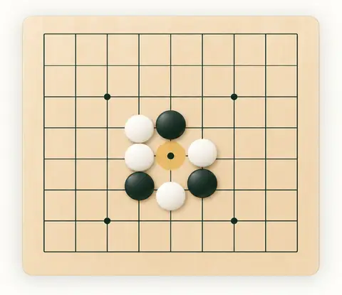
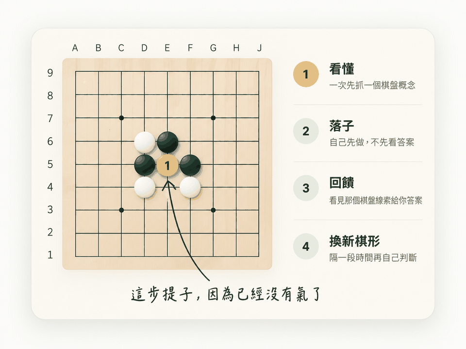
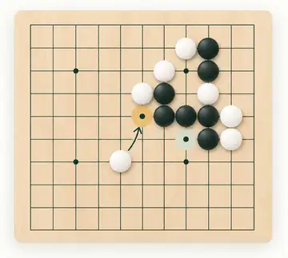
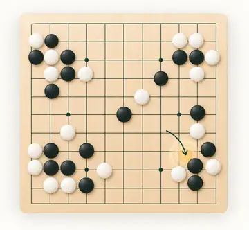
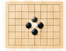
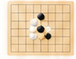
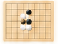
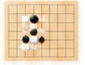

從零開始基礎建立
從氣、提子、連接與切斷開始用最小的棋盤，學會圍棋最核心的規則與棋形。適合完全新手，或想重新打好基礎的你。
氣與提子連接與切斷簡單棋形
適合完全零基礎，從第一口氣開始。
每一次只學一個概念，先看懂、再在棋盤上動手；
從可觀察的棋形開始，慢慢建立全局的判斷力。

當一群棋子沒有氣時，
就會被提掉。
沒有氣的棋子，
就會被提掉。
你可以依照現在的理解與目標，選擇最適合的起點。我們設計了三個學習入口，幫助你穩紮穩打，逐步建立自己的圍棋能力。

從零開始用最小的棋盤，學會圍棋最核心的規則與棋形。適合完全新手，或想重新打好基礎的你。
適合完全零基礎，從第一口氣開始。

已有規則基礎學會從局部棋形中，判斷哪一方有利、哪裡有風險，逐步培養計算與閱讀棋形的能力。

已有局部基礎在 9 路棋局中，練習全盤觀察、形勢判斷與策略選擇，將所學應用到完整對局。
目前課程：15 單元 · 19 課 · 106 題。這些數字只描述內容量，不代表學習成效或棋力。
從氣與提子開始，練習規則、局部讀棋與全局判斷。也可以在下方直接選擇單元。
深化讀棋與手筋、中盤攻防、官子及全局判斷。這些內容目前作練習，不換算級位。
查看進階訓練 想下完整一局？前往自由對弈與複盤好的練習，是讓你在不同情境下，持續看懂、做對並靈活應用。我們用簡單的四步驟，練習建立自己的圍棋判斷。

先自己做先思考再落子，
培養獨立思考的習慣。

看清楚問題對照解析，再看關鍵點，
知道自己為什麼錯、
下次怎麼做。

隔一段時間再做過一段時間再試一次，
檢驗自己是否真正學會。

換一個不同的棋形在新的棋形中應用所學，
學會舉一反三，而不是只
記住答案。
真正重要的結果：不是做了多少題，而是過一段時間後，遇到不同的棋形，仍然能自己想出正確的下法，並應用到新的情境中。
進入學習後，畫面會標示目前任務：課程／練習／到期複習／延後再判／局面應用。這是任務類型，不是能力等級；上方四個動作則是在說明練習方法。
做題只是練習的一部分。我們更關心：你能否看懂棋形、做出判斷，並在新的局面用上所學。
想多認識圍棋？也可以從這裡延伸閱讀。
不確定自己的級位也沒關係。從你能理解的內容開始，再練習更複雜的棋形。
目前不能換算：完成課程不等同 15K、10K、5K 或某個段位；本站尚未做外部棋力對照與真人校準。
不用。第一課就是從棋子的氣與提子開始，核心進度目前保存在這台瀏覽器，不需要先建立帳號。
目前不能換算。本站尚未做外部棋力對照與真人校準，因此不把完成課程直接換成級位或段位。
不要求每天固定時數。可以用短時間持續練習；重點是之後再回來做，並在新的棋形中重新判斷。
這四個動作是目前課程的練習設計方向；下方列出完整來源與研究限制。
Roediger & Karpicke, 2006｜Test-enhanced learning
不用圍棋經驗，也不需要先達到任何級位。
從看見棋子如何互相影響開始，打下穩固的第一步。
現在先看本課短講，再開始作答。
先記下當時想下的手與理由，再重建原局著手。這只保存復盤資料，不會判定哪一手最好。
原棋譜著手已由棋譜保存；只有在你用外部分析或人工複盤確認後，才標示可接受答案。未確認時請保留「尚未確認」。
會下載保留局面、原棋譜著手與你的復盤紀錄的 SGF；可用 KaTrain 開啟，這裡不會自動判定好壞。